Map 1 - (10/13/10)
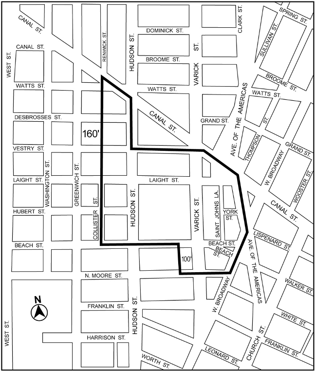
Portion of Community District 1, Manhattan
Map 1 - (3/20/13)
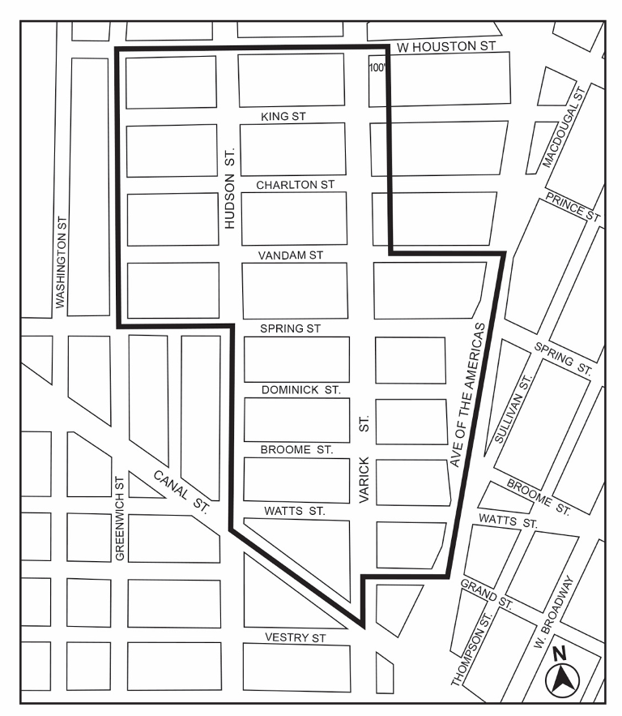
Portion of Community District 2, Manhattan
Map 2 - (12/15/21)
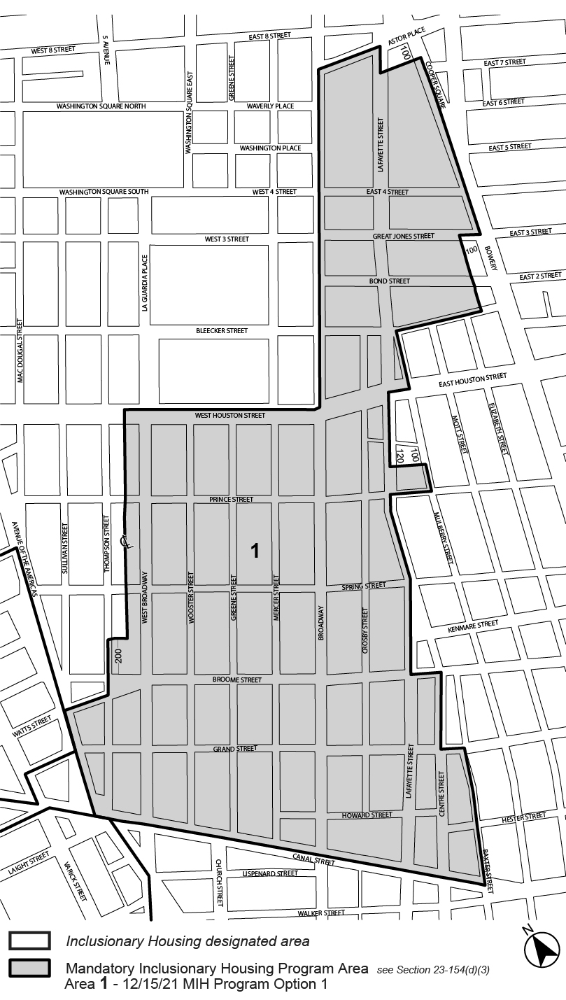
Portion of Community District 2, Manhattan
Map 1 - (2/27/20)
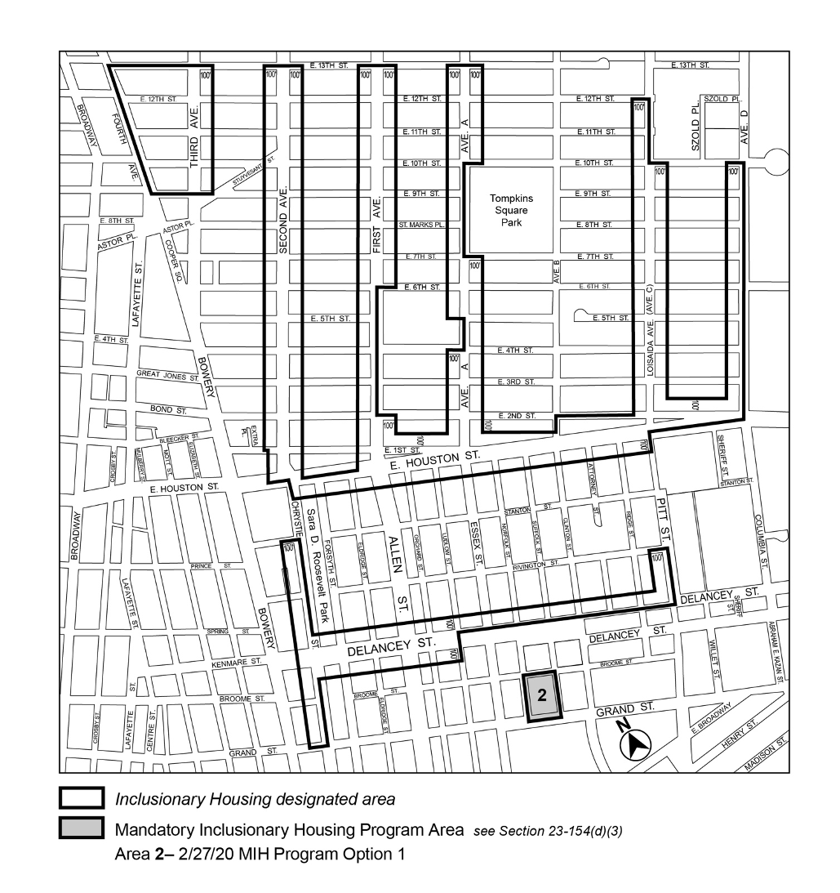
Portion of Community District 3, Manhattan
Map 2 – (8/8/18)
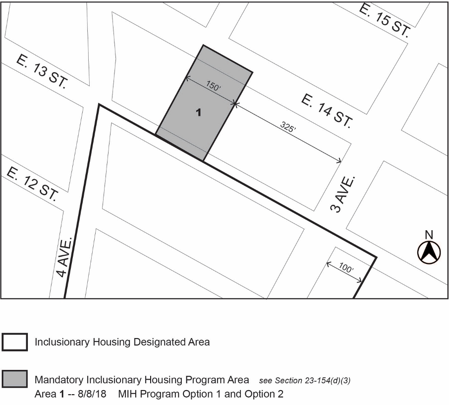
Portion of Community District 3, Manhattan
Map 1 - (6/28/18)
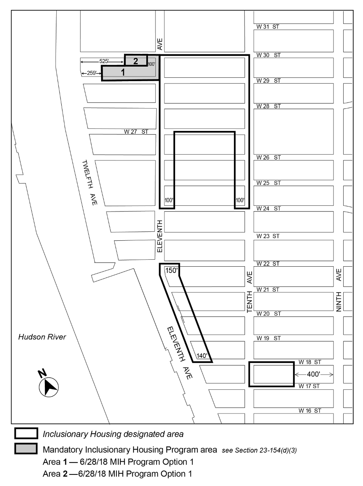
Portion of Community District 4, Manhattan
Map 2 – (7/16/26)
Portion of Community District 4, Manhattan
Map 3 – (12/21/09)
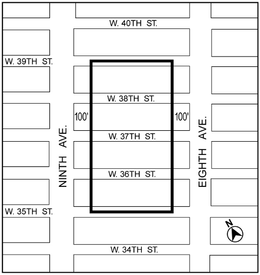
Portion of Community District 4, Manhattan
Map 4 – (10/21/21)
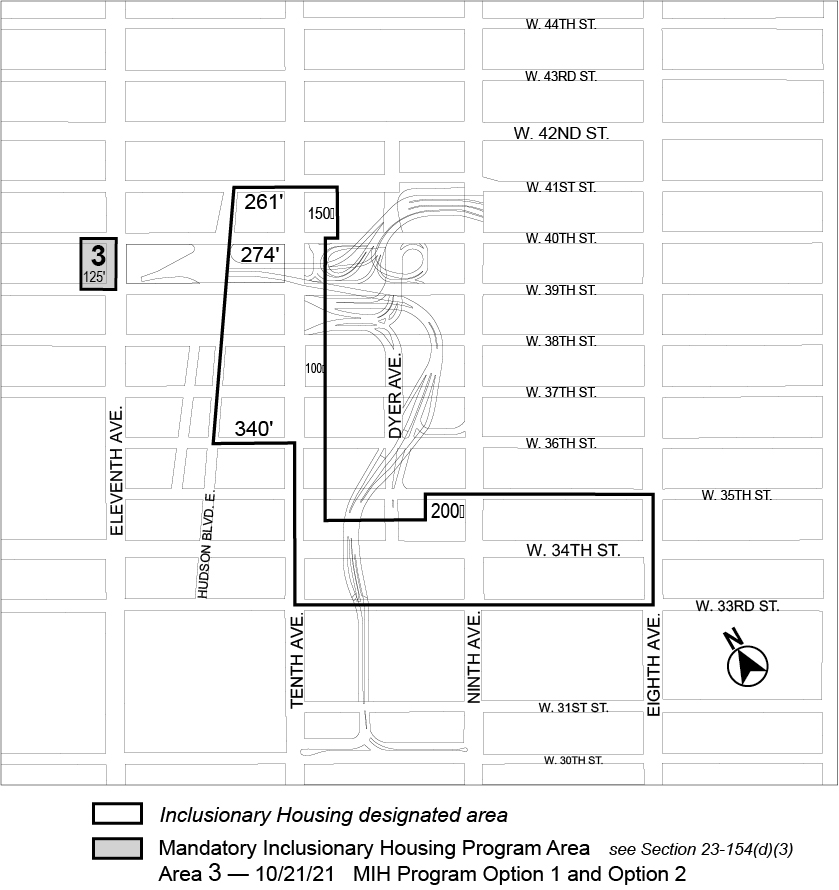
Portion of Community District 4, Manhattan
Map 1 - (9/21/11)
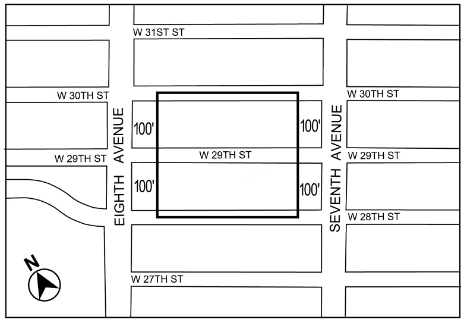
Portion of Community District 5, Manhattan
Map 1 - (8/14/25)
Portion of Community Districts 4 and 5, Manhattan
Map 1 - (3/26/08)
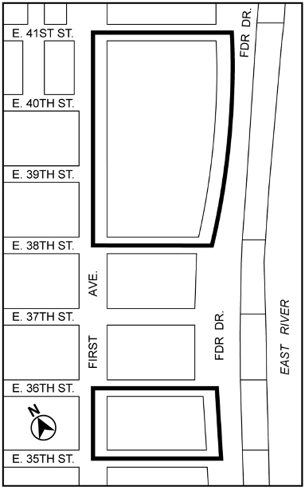
Portion of Community District 6, Manhattan
Map 2 - (8/8/18)
Portion of Community District 6, Manhattan
Map 3 - (2/13/25)
Portion of Community District 6, Manhattan
Map 1 - (9/25/07)
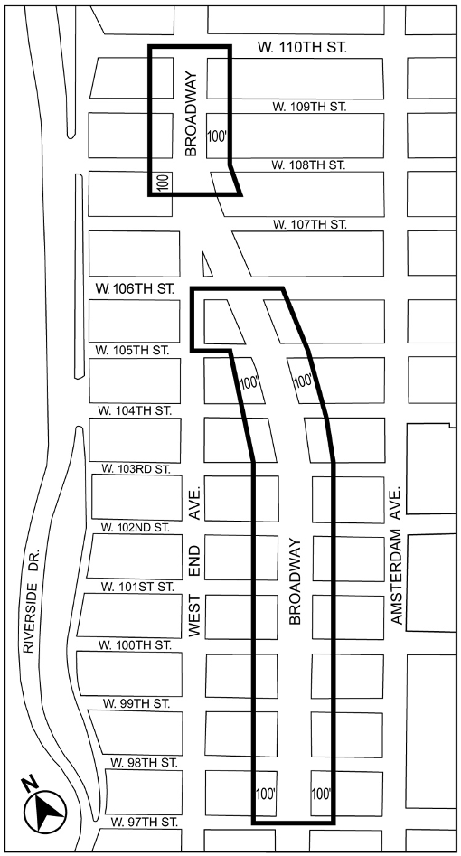
Portion of Community District 7, Manhattan
Map 2 - (12/20/10)
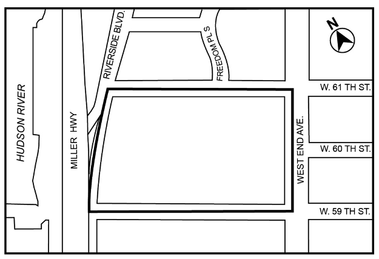
Portion of Community District 7, Manhattan
Map 3 – (4/25/18)
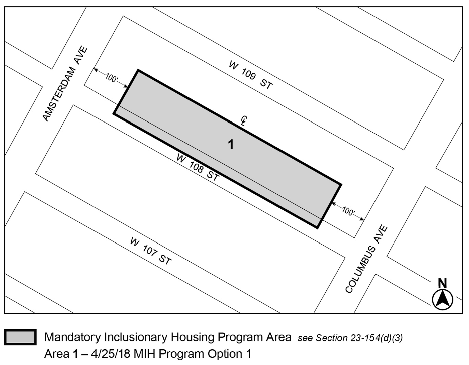
Portion of Community District 7, Manhattan
Map 1 - (11/23/21)
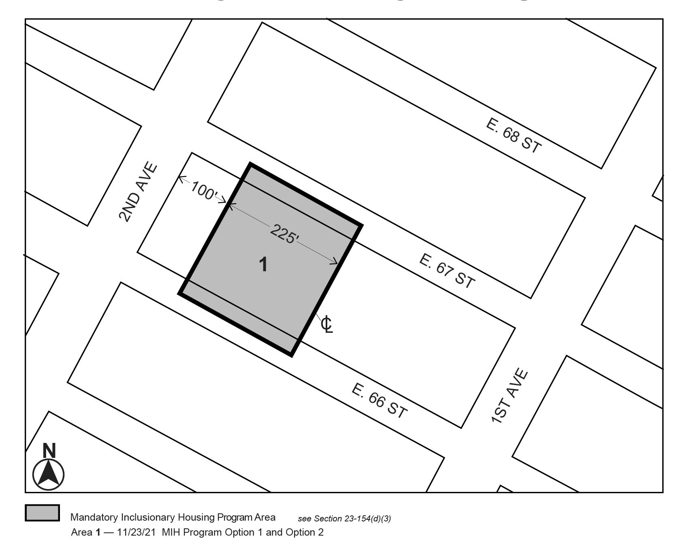
Portion of Community District 8, Manhattan
Map 2 - (3/19/24)
Portion of Community District 8, Manhattan
Map 3 - (8/14/25)
Portion of Community District 8, Manhattan
[see also individual maps in Manhattan CD 9, CD 10 and CD 11]
Map 1 – (12/18/25)
Portions of Community Districts 9, 10 and 11, Manhattan
Map 1 – (11/13/12)
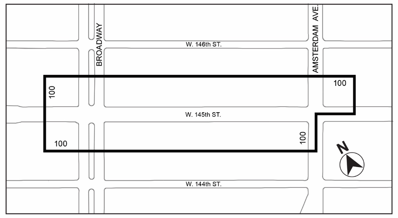
Portion of Community District 9, Manhattan
Map 2 - (10/23/24)
Portion of Community District 9, Manhattan
Map 1 - (12/19/19)
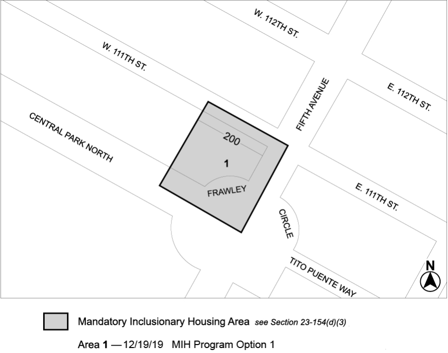
Portion of Manhattan Community District 10
Map 2 - (7/14/25)
Portion of Manhattan Community District 10
Map 2 – (8/24/17)
Portion of Community District 11, Manhattan
Map 3 – (9/27/17)
Portion of Community District 11, Manhattan
Map 5 – (7/14/25)
Portion of Community District 11, Manhattan
Map 6 – (12/19/17)
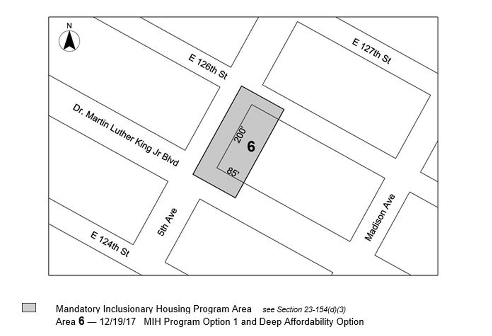
Portion of Community District 11, Manhattan
Map 7 – (10/17/19)
Portion of Community District 11, Manhattan
Map 8 – (3/12/25)
Portion of Community District 11, Manhattan
Map 1 - (8/8/18)
Portion of Community District 12, Manhattan